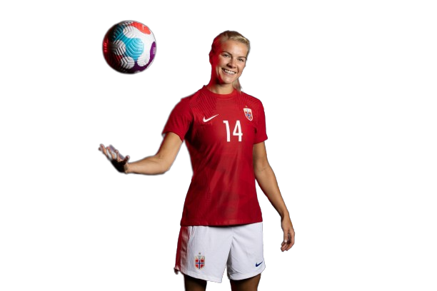

Player
Highlights

Sam Kerr
- Sam Kerr started playing Australian football in a boy's league until her parents put her in soccer when she was 12 - she then debuted for the Australian national soccer team 3 years later.
- In 2011, Kerr played in her first World Cup at age 17, and has since scored 54 international goals - which makes her Australia's top international goal-scorer.
- Kerr has won the Golden Boot award in 3 different leagues - the A-League, the NWSL, and the FA WSL.
Alex Morgan
- Alex Morgan didn't start playing soccer until she was 14 years old, and was dubbed "Baby Horse" because of her equine-like gait.
- In 2015, Morgan was the first female to appear on the cover of FIFA video games and appeard alongside Lionel Messi on the cover of FIFA 16.
- Morgan has won many awards, including the 2019 ESPY Award for Best Female Athlete, US Soccer Athlete of the Year (twice), and the 2019 FIFA Women's World Cup Silver Boot.

Alexia Putellas
- Alexia Putellas started playing soccer at the age of 6, and played for a year at the Barcelona youth academy at age 11.
- In the 2020-21 season, Putellas won the Ballon d'Or, Best FIFA Women's Player, and UEFA Women's Player of the Year in the same year.
- Since joining FC Barcelona in 2012, Putellas has won every major trophy at the club level that she could - these include 6 Primera Division titles, 6 Copa de la Reina trophies, and a UEFA Women's Champions League final victory.
Beth Mead
- Beth Mead started playing at an early age on a local boys team. The nearest girls' team was 45 minutes away, so she ended up joining Middlesbrough Academy girl’s football team.
- In 2022, Mead was named UEFA Women's Euros Player of the Tournament, England's Best Women Player of the Year, and won the Golden Boot.
- In her international career, Mead has played for every England age group since making her debut for the U15s in March 2010.


Ada Hegerberg
- Ada Hegerberg won the first ever Women's Ballon d'Or and at age 25, she has scored over 300 goals. She is a huge advocate for girls and women in soccer.
- In January 2016, Hegerberg was awarded the 2015 Norwegian Gold Ball, given to the best footballer in Norway. The previous time it was awarded to a woman was 20 years earlier.
- In 2018 Hegerberg was the first-ever recipient of the Ballon d'Or Féminin. She holds the record for most goals in a UEFA Women's Champions League season, and is currently the all-time highest goalscorer in UEFA Women's Champions League.
Wendie Renard
- Wendie Renard went to France at the age of 15 for a trial at the Clarefontaine academy, but did not earn a place in the national training program. She then went to Lyon for another trial and was signed at age 16.
- Renard has represented France in two FIFA Women's World Cups and two Olympics, and was the team captain from September 2013.
- Renard is a 4 time Division 1 Feminine Champion, 5 time Champions League Champion, 5 time FIFA FIFPro Women's World XI, and earned a spot on the 2015 FIFA Women's World Cup All Star Squad.